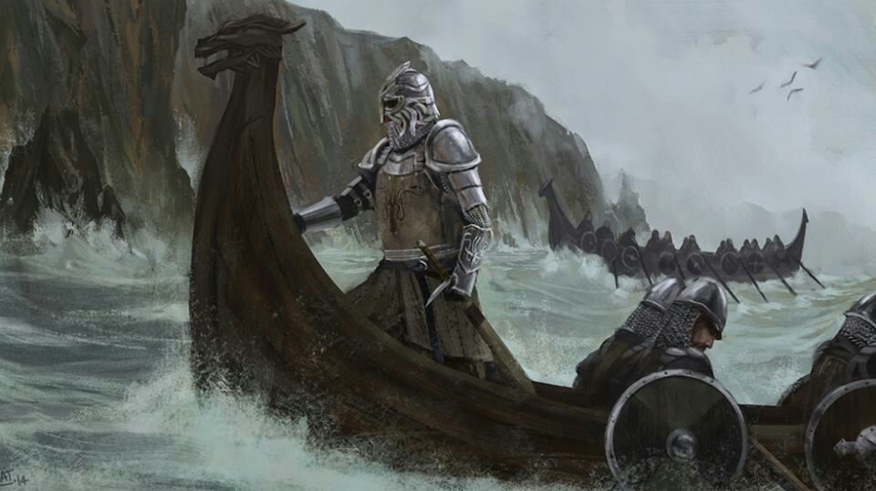
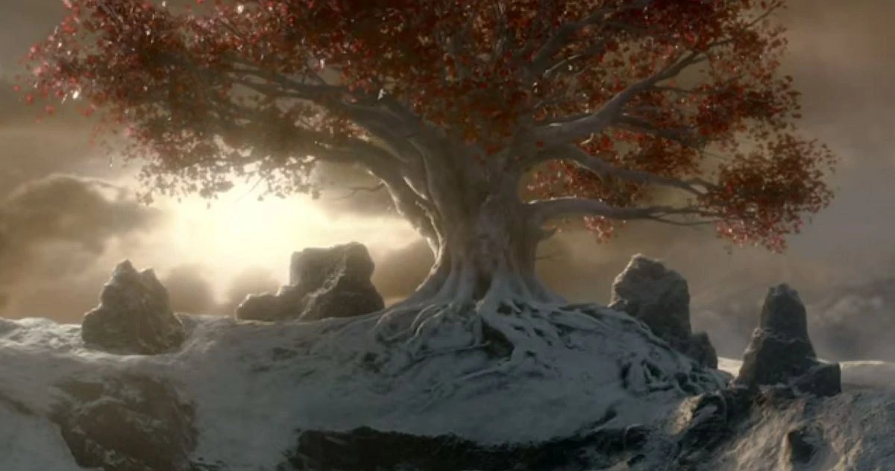
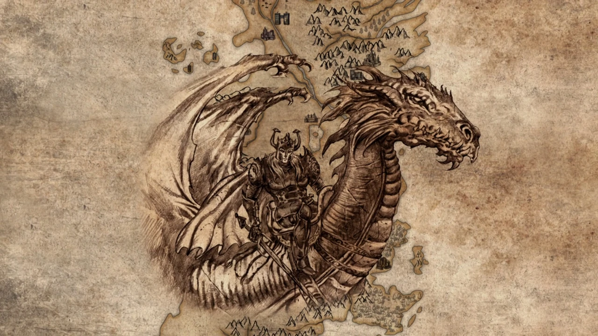

Hechos historicos
Los Primeros Hombres llegan a Westeros
Antes de que los primeros hombres llegaran a Westeros, las tierras estaban ocupadas por los misteriosos hijos del bosque, junto con un grupo de criaturas mágicas. La historia cambió para siempre en el año 12.000 a. C. cuando los humanos de Essos aterrizaron en Westeros. Debido a su superioridad tecnológica, los Primeros Hombres se anexaron rápidamente Westeros. Esto marca el primer evento que dio forma a cómo se desarrollaría Westeros con el tiempo.

La frase “Se acerca el invierno” hace referencia en parte al invierno eterno que llegó con el Amanecer de la Larga Noche. Los Otros (conocidos como los Caminantes Blancos) montaron su primera invasión en las tierras de Westeros y casi lograron apoderarse de todo el continente. Solo cuando los hijos del bosque y los Primeros Hombres se unen, pueden expulsar esta invasión. Esto se logra mediante el uso de armas Dragonglass, que ayudaron a la Guardia de la Noche a empujar la invasión hacia el Norte.
El Muro es una de las partes más icónicas de Poniente y sirve como medio de protección contra la fuerza opresiva de los Otros. Basta con decir que este Muro se construyó después de que la invasión de esta fuerza de otro mundo se detuviera de una vez por todas. Bran the Builder utilizó la ayuda de casi todas las razas para construir este Muro mágico que serviría como una importante fuerza protectora en los años venideros. ¡Esta figura legendaria hizo Invernalia y también fundó la Casa Stark!

La fe de los siete se establece como religion
La Fe de los Siete es una de las religiones más legendarias de Poniente. Las raíces de esta religión se establecieron en Poniente en el año 4000 a.C. El primer rey de los Ándalos, Hugor de la Colina, aparentemente vio estas siete deidades en su visión. Esto condujo a la formación de la religión y sirvió como combustible para la invasión ándala de Poniente.

Los salvajes lanzan una invasion
Los Salvajes viven al norte del muro y fueron introducidos en Game of Thrones como gente salvaje pero digna de confianza. En el año 3000 a. C., este grupo intentó invadir Westeros después de lograr atravesar el Muro de forma encubierta. Sin embargo, su invasión se detuvo rápidamente después de ser frustrada por los ejércitos de la Casa Stark. Fueron obligados a regresar a sus países de origen, y Westeros volvió a estar libre de conflictos… aunque no por mucho tiempo.

Los Targaryen llegan a Rocadragon desde Valyria
La llegada de los Targaryen marcó un gran punto de inflexión en la historia de Poniente. Después de que Daenys Targaryen recibiera una visión profética, Lord Aenar decidió mudarse a Rocadragón desde Valyria. Este movimiento llegó justo a tiempo, ya que Valyria fue prácticamente destruida doce años después, después de que fuerzas misteriosas causaran numerosos terremotos y explosiones volcánicas. Así, el legado de los Targaryen quedaría establecido tras esta migración a Poniente.

Se inicia la construcción de Harrenhal
Harrenhal es el castillo más grande de todo Westeros y una de las estructuras más históricas del continente. Este proyecto fue aprobado en el año 42 a. C. por Harren Hoare, rey de las islas y los ríos. Dado el enorme tamaño de este castillo, es fácil ver por qué se necesitaron cuarenta años para construir este castillo legendario. Se suponía que era una de las fortalezas más poderosas de Westeros, pero la amenaza aérea de los dragones en ese momento, junto con sus enormes costos de mantenimiento, han llevado a que el castillo sea una ruina en este punto.

Aegon Targaryen conquista Westeros
Aegon el Conquistador es una de las figuras más importantes de la historia de Targaryen. Fue su ambición ilimitada y su inmenso poder lo que llevó a que la invasión de Westeros fuera un éxito inequívoco. Esta invasión inició el ascenso de la familia Targaryen, con seis de los siete reinos del reino sometidos por él. Su reinado en la cima está verdaderamente lleno de acontecimientos, con muchos gobernantes trayendo años de paz y prosperidad o una tonelada de conflictos en Westeros.

Los dragones eran un símbolo de poder para los Targaryen, razón por la cual precisamente este evento en la historia fue tan monumental. El rey Aegon III Targaryen obtuvo el apodo de Dragonbane después de que no logró incubar dragones sanos. Así, el último de los dragones murió en 153 AC. Este seguiría siendo el caso hasta que Daenerys Targaryen eclosionara tres dragones que se convertirían en leyendas por derecho propio.

Un levantamiento contra los Targaryen
Después de que el Rey Loco alienó a casi todos durante su reinado, quedó claro que los Targaryen necesitaban ser usurpados de su trono. Esto provocó un levantamiento liderado por el valiente Robert Baratheon, con Eddard Stark ayudándolo en cada paso del camino. El Rey Loco fue asesinado con la ayuda de Jaime y Robert Baratheon ascendió al Trono de Hierro. Esto condujo a un breve período de paz antes de los acontecimientos de Una canción de hielo y fuego sería puesto en marcha.

Para mayor información sobre estos y otros habitantes de este continente buscar en la wiki en español.